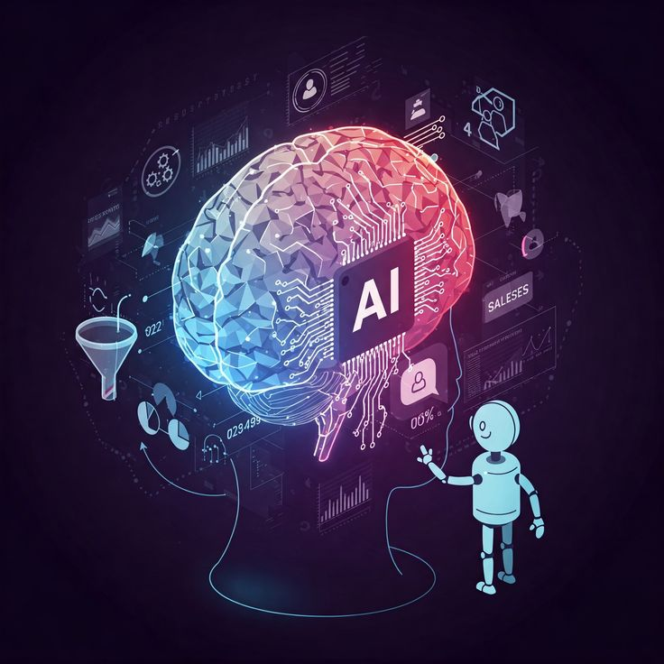
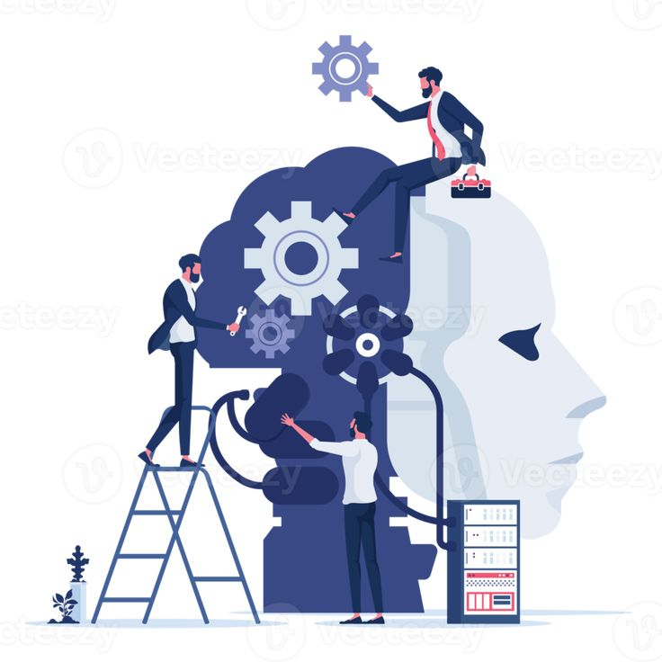

HISTORIA LA INTELIGENCIA ARTIFICIAL
La historia de la inteligencia artificial comenzó en 1943 con la publicación del artículo A Logical Calculus of Ideas Immanent in Nervous Activity de Warren McCullough y Walter Pitts. En ese trabajo, los científicos presentaron el primer modelo matemático para la creación de una red neuronal.
El primer ordenador de red neuronal, Snarc, fue creado en 1950 por dos alumnos de Harvard: Marvin Minsky y Dean Edmonds. Ese mismo año, Alan Turing publicó el Test de Turing, que todavía se utiliza hoy para valorar las IA.
En 1952, Arthur Samuel creó un software capaz de aprender a jugar al ajedrez de forma autónoma. El término inteligencia artificial fue utilizado por primera vez en la conferencia Dartmouth Summer Research Project on Artificial Intelligence de John McCarthy en 1956.
En ese acto, los investigadores presentaron los objetivos y la visión de la IA. Muchos consideran esta conferencia como el verdadero nacimiento de la inteligencia artificial, tal y como se conoce hoy en día.
En 1959, Arthur Samuel acuñó el término Machine Learning mientras trabajaba en IBM. Por su parte, John McCarthy y Marvin Minsky fundaron el MIT Artificial Intelligence Project. En 1963, John McCarthy también creó el AI Lab en la Universidad de Stanford.

En los siguientes años, se cernieron dudas sobre el campo de la IA. En 1966, el informe estadounidense ALPAC puso de manifiesto la falta de avances en la investigación de la traducción automática destinada a traducir simultáneamente la lengua rusa en el contexto de la Guerra Fría. Muchos proyectos financiados por el gobierno estadounidense fueron cancelados.
Del mismo modo, en 1973, el gobierno británico publicó su informe lighthill en el que destacaba las decepciones de la investigación en IA. Una vez más, los proyectos de investigación fueron reducidos por los recortes presupuestarios. Este periodo de duda duró hasta 1980, y ahora se denomina el primer invierno de la IA.
Ese invierno terminó con la creación de R1 (XCON) por parte de Digital Equipment Corporations. Este sistema comercial experto está diseñado para configurar los pedidos de nuevos sistemas informáticos, y provocó un auténtico auge de las inversiones que se prolongó durante más de una década.
Japón y Estados Unidos hicieron grandes inversiones en la investigación de la IA. Las empresas se gastaron más de mil millones de dólares al año en sistemas expertos y el sector no paraba de crecer.

Desgraciadamente, el mercado de las máquinas “Lisp” se desplomó en 1987 al surgir alternativas más baratas. Este fue el segundo invierno de la IA. Las empresas perdieron el interés por los sistemas expertos. Los gobiernos de Estados Unidos y Japón abandonaron sus proyectos de investigación y se gastaron miles de millones de dólares para nada.
Diez años después, en 1997, la historia de la IA estuvo marcada por un acontecimiento importante. La IA Deep Blue de IBM triunfó sobre el campeón mundial de ajedrez Gary Kasparov. Por primera vez, el hombre fue derrotado por la máquina.
En 2012, Andrew Ng alimentó una red neuronal con 10 millones de vídeos de YouTube como serie de datos de entrenamiento. Gracias al Deep Learning, esta red neuronal aprendió a reconocer un gato sin que se le enseñara lo que es un gato. Este fue el inicio de una nueva era para Deep Learning.
En 2016 se produjo otra victoria de la IA sobre el ser humano, con el triunfo del sistema AlphaGo de Google DeepMind sobre Lee Sedol, el campeón de Go. La inteligencia artificial también conquistó el campo de los videojuegos, especialmente con DeepMind AlphaStar en Starcraft u OpenAI Five en Dota 2.
Actualmente, empresas de todos los sectores utilizan el Deep Learning y el Machine Learning para infinidad de aplicaciones. La IA no deja de avanzar y sorprender con su rendimiento. El sueño de la inteligencia artificial general se acerca cada vez más a la realidad.